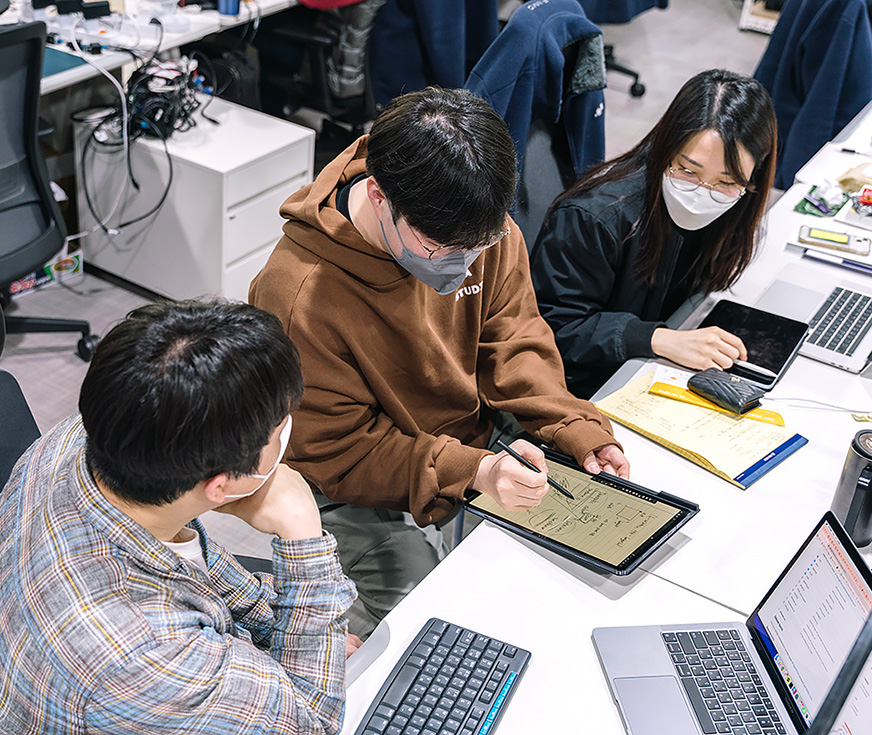
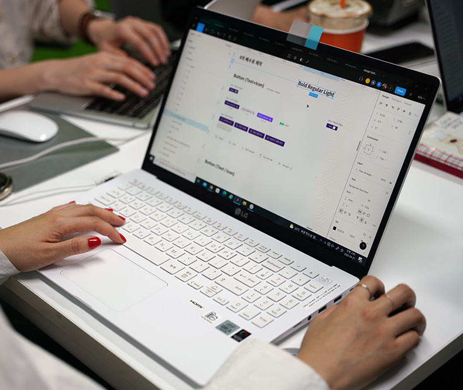
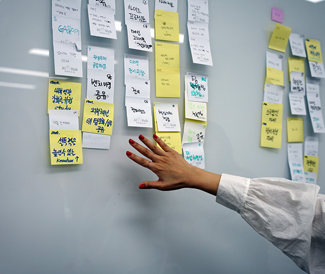
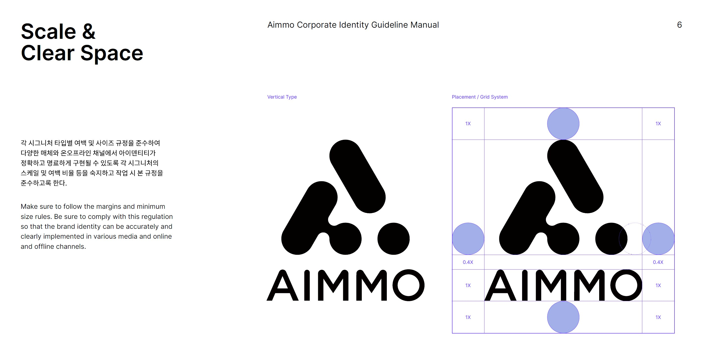
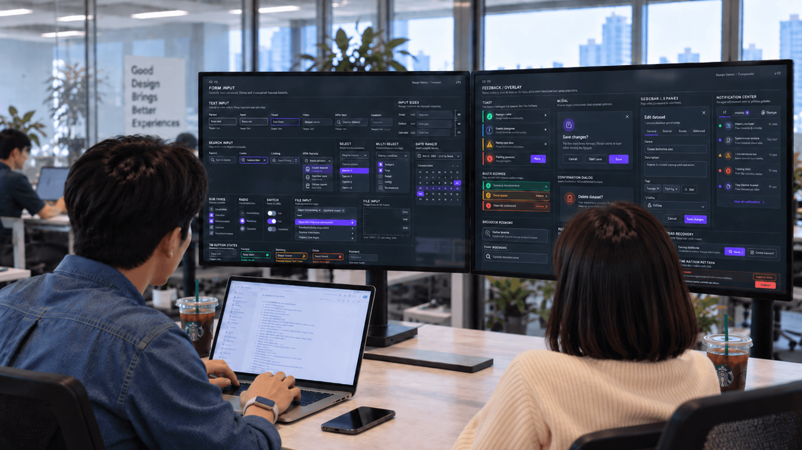
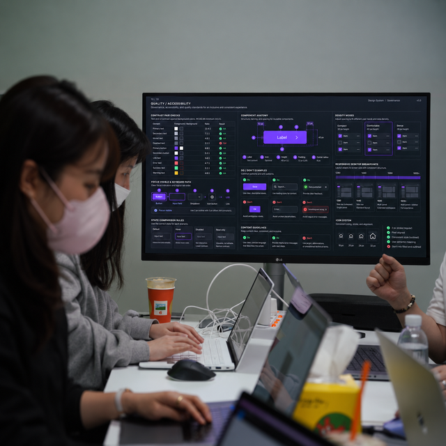
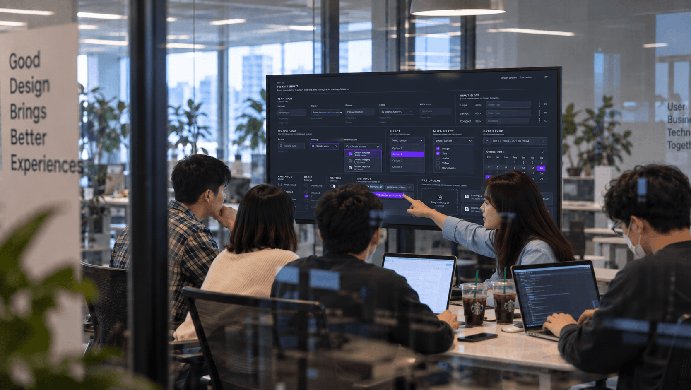

디자인 시스템 구축으로 시작했지만,
전체 업무 시스템 개선으로 마무리 됐습니다.
사용자와 업무 환경, 팀의 반복 업무를 함께 분석해 가장 필요한 기준부터 순차적으로 구축했습니다.
01파악해 보니,
파악해 보니,
같은 일을 계속 반복하는 것이 더 큰 문제였습니다.
01.1
먼저 팀원들로부터 히스토리를 파악했습니다.
팀이 왜 시스템을 만들지 못했고 어떤 불편을 반복해왔는지부터 확인했습니다.
SYNTHESIS결국 디자인 시스템의 필요성보다 경험·시간 부족과 단계 적용의 어려움이 먼저 문제였고,
결국 디자인 시스템의 필요성보다 경험·시간 부족과 단계 적용의 어려움이 먼저 문제였고,
조직의 공감대 부족까지 겹치며 시작과 운영 자체가 계속 미뤄지고 있었습니다.
따라서 결과물보다 실행 가능한 방식과 운영 구조를 먼저 정리할 필요가 있었습니다.
01.2문제는 디자인팀만이 아니었습니다.
문제는 디자인팀만이 아니었습니다.
디자인과 개발 모두 반복 작업을 계속하고 있었습니다.
같은 기능을 설계·전달·구현·확인하는 과정이 제품마다 다시 시작됐습니다.
요구사항 정리
비슷한 기능도 제품마다 다시 해석했습니다.
›
불필요한 디자인 반복02 03
화면 설계
공통 기준 없이 화면을 다시 설계했습니다.
›
UI 재제작
기존 리소스 대신 컴포넌트를 다시 만들었습니다.
›
개발 전달
화면마다 속성과 상태를 다시 설명했습니다.
재사용 안되는 비효율적인 구조05 06
개발 재구현
비슷한 UI도 제품별로 다시 구현했습니다.
›
예외 재확인
상태와 예외 케이스를 다시 맞췄습니다.
›
QA·수정
기준 차이로 수정과 확인이 반복됐습니다.
›
다시 시작
다음 제품에서도 같은 과정이 반복됐습니다.
01.3그래서 목표를 디자인 시스템 제작에서,
그래서 목표를 디자인 시스템 제작에서,
디자인·개발 프로세스와 협업 방식 정립으로 확장했습니다.
산출물 전달부터 토큰·라이브러리 운영까지 재사용 가능한 협업 구조로 바꿨습니다.
02만들기 전에 먼저,
만들기 전에 먼저,
실사용자들의 업무 방식과 환경부터 분석했습니다.
02.1같은 사무실의 사용자에게 묻고,
같은 사무실의 사용자에게 묻고,
옆에서 실제 업무를 따라가며 확인했습니다.
사용 환경·조도·작업 시간을 인터뷰하고 Shadow Tracking으로 실제 서비스 이용 과정을 확인했습니다.



02.2관찰해 보니 시스템 제작의 핵심은,
관찰해 보니 시스템 제작의 핵심은,
빠르고 정확한 판단과 실행, 그리고 최적화였습니다.
Crowd Worker 특성상 탐색·판단·실행 시간을 줄이는 것이 생산성과 직결됐습니다.
저녁 · 밤에 주로 작업
낮은 조도의 저녁·밤에 작업이 집중됐고, 한 번 시작하면 장시간 이어졌습니다.
주로 집에서 장시간 작업
업무시간의 78.7%를 재택으로 진행한다고 답했습니다.
78.7%HOME
집에서 작업78.7%
회사 · 기타 장소21.3%
SOURCE · AIMMO Cloudworker 100명을 대상으로 한 설문
빠른 상태 판단이 매우 중요
상태와 다음 행동을 즉시 구분할수록 재확인 시간이 줄었습니다.
최우선은 생산성
탐색·판단 시간을 줄이는 것이 처리량과 보상에 직접 연결됐습니다.
02.3환경과 사용 패턴을 분석해 보니,
환경과 사용 패턴을 분석해 보니,
주요한 개선 포인트들을 발견했습니다.
다크 모드를 정답으로 두지 않고, 저조도·장시간 사용 환경과 관련 연구를 함께 검토했습니다.

다크 모드로 전환했습니다.

컬러를 다시 조정했습니다.

간격을 다시 설정했습니다.

영문 가이드까지 만들었습니다.
03분업과 오너십을 바탕으로,
분업과 오너십을 바탕으로,
실제 시스템으로 옮겼습니다.
03.1역할을 나누고,
역할을 나누고,
각자의 오너십으로 실행했습니다.
팀원별 오너십을 나누고, 지속적인 공유와 리뷰로 하나의 품질 기준을 유지했습니다.
지속적인 리뷰와 공유를 통한 고도화01 02 03 04 05
TYPE
폰트 위계와 텍스트 규칙
COLOR
상태와 행동 컬러 체계
GRAPHIC
그래픽 스타일과 표현 기준
COMPONENT
코어 컴포넌트와 상태 정의
TOKEN
개발과 공유할 공통 값
03.2분업으로 만든 시스템을,
분업으로 만든 시스템을,
실제 제품과 업무에 적용하며 함께 완성했습니다.
영역별로 병렬 구축한 뒤 리뷰·제품 적용·개발 협의를 반복해, 디자인 시스템을 실제 업무 기준으로 정착시켰습니다.

영역을 나누고 각자의 오너십으로 병렬 구축했습니다.

각자 만든 기준을 정기 리뷰로 하나의 시스템으로 맞췄습니다.

실제 제품에 적용하며 재사용성과 예외를 검증했습니다.
적용을 위해 디자인과 개발이 함께 기준과 우선순위를 맞췄습니다.
04결국 돌아보니,
결국 돌아보니,
디자인이 아닌 업무 시스템을 개선하는 작업이었습니다.
04.1지금까지 구축한 디자인 시스템 중,
지금까지 구축한 디자인 시스템 중,
업무 방식의 변화가 가장 분명하게 나타났습니다.
디자이너·개발자·PO 인터뷰와 Asana를 통한 업무 시간 추적 비교를 통해 제작 전후의 변화를 확인했습니다.
GUI 디자인
제작 소요시간
제작 소요시간
-72%
협업 부서와의
소통 시간
소통 시간
-63%
Front-end 개발
소요시간
소요시간
-38%
UX 설계·기획
고려시간
고려시간
+45%
SOURCE - 디자이너·개발자·PO 인터뷰 및 Asana를 통한 업무 시간 추적 비교를 통한 생산성 변화 수치
04.2팀이 체감한 변화도,
팀이 체감한 변화도,
업무 방식에서 분명하게 나타났습니다.
디자이너·개발자 피드백을 통해 속도, 소통, UX 집중도의 변화를 함께 확인했습니다.